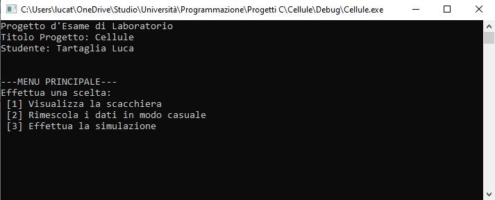
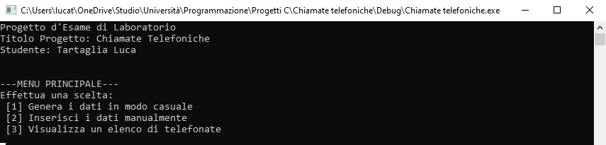

Corso di Laurea in Informatica
Corso di Programmazione I e Laboratorio di Programmazione I
(12 CFU)
Anno Accademico 2020-2021
Studente: Tartaglia Luca
Matricola: 0124002294
Progetto d'esame di Laboratorio
Esercizio 1 - Progetto Cellule

..::
Vai alla soluzione Apri il file C ::..
Esercizio 2 - Progetto Chiamate Telefoniche

..::
Vai alla soluzione Apri il file C ::..